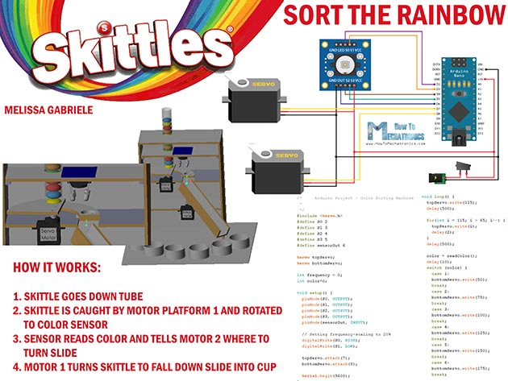
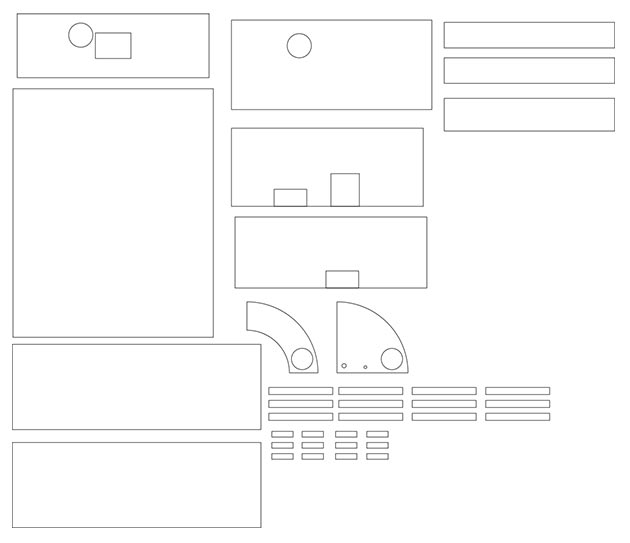
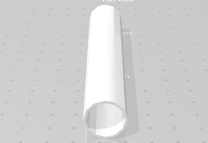
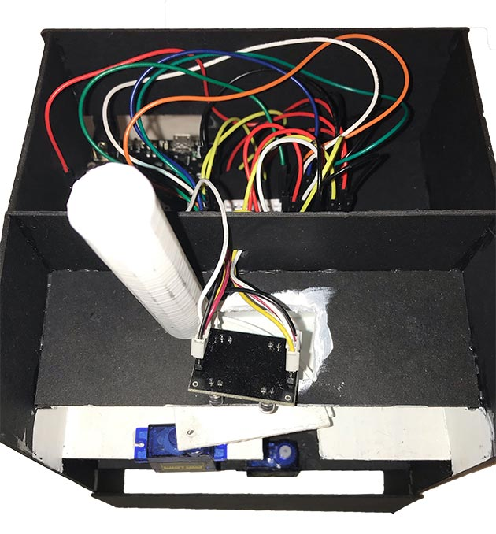

The Skittles Color Sorter is an ardiuno color sorter I built and wired.
The image below shows the structure, wiring, and code for the Skittles color sorter.
How it works:
This color sorter wa build using the Adafruit METRO 328, wires, a breadboard, 2 micro servo motors, a color sensor, cardboard, and 3D prints.
The body of the color sorter was laser cut out of cardboard. Each piece was planned and drawn in Adobe Illustraor.
The skittles tube and ramp were designed as 3D models and printed.
The code for the arduino was written in C/C++ and the body was wired accordingly.